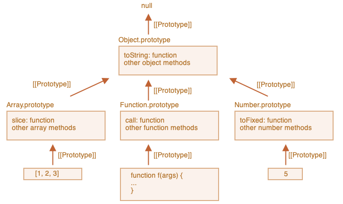
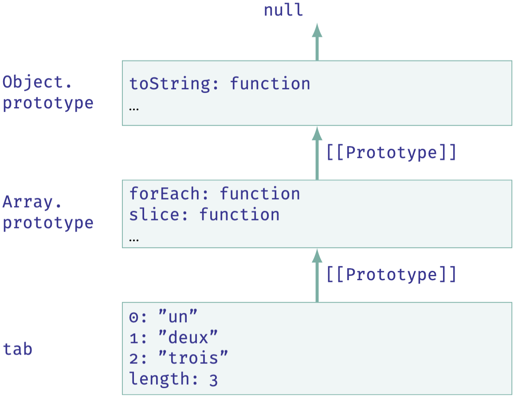
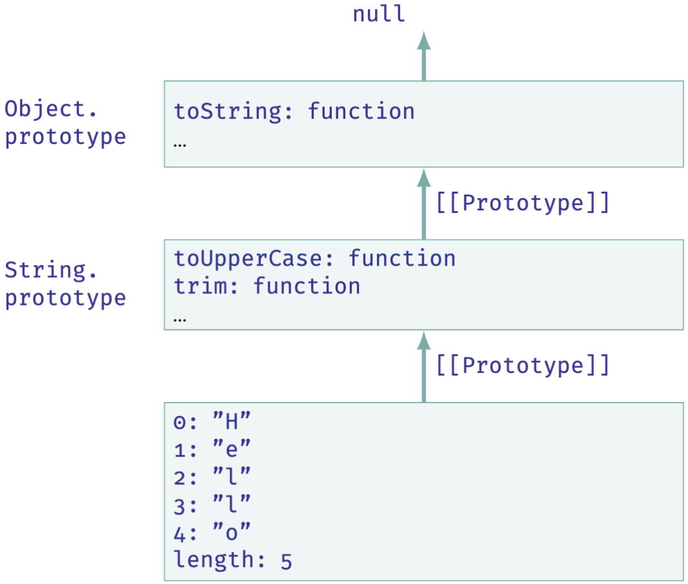

Web Dynamique côté Client
Les objets standards
Dans ce chapitre
- Les objets en JavaScript
- La programmation orientée objet
- Objets standards
- Tableaux
- String
- Number
- Map, Set
- JSON
- Angular
- AJAX
Objets natifs standards
- JS prédéfinit des objets standards, disponibles de façon native
- Portée globale, c'est-à-dire accessibles partout dans le code
- Fournissent des fonctionnalités de base, rendues accessibles par héritage prototypal

Objets natifs standards
Exemples
| Constructeur | Description |
|---|---|
Object |
Base pour tous les sous-type d'objets |
Function |
Prototype pour les fonctions (rappel: les fonctions sont des objets en JS) |
Math |
Fournit des constantes et des fonctions mathématiques |
Date |
Représente des dates et heures |
String |
Représente des chaînes de caractères et fournit des méthodes pour les manipuler |
Array |
Représente des tableaux et fournit des méthodes pour les manipuler |
Map |
Représente un dictionnaire |
Set |
Représente une collection d'éléments uniques |
RegExp |
Représente des expressions régulières pour la recherche et la manipulation de chaînes de caractères |
Boolean |
Objet enveloppe pour les valeurs booléennes (true/false) |
Number |
Objet enveloppe pour les valeurs numériques |
Error |
Base pour les objets d'erreur |
RangeError |
Erreur générée lorsqu'une valeur n'est pas dans l'ensemble ou la plage autorisée |
Tableaux
- Les tableaux sont des collections ordonnées d'éléments
- Dynamique: leur taille peut changer au cours de l'exécution du programme
- Héritent des propriétés et méthodes de l'objet standard
Array
let tab = ["un", "deux", "trois"];
console.log(tab.length); // 3
console.log(typeof tab); // "object"
console.log(tab.toString()); // "un,deux,trois"

Création de tableaux
- Création avec expression littérale ou constructeur
let tab1 = []; // tableau vide
let tab2 = new Array(3); // tableau de 3 éléments non initialisés
let tab3 = ["un", "deux", "trois"];
let tab4 = [1, 2, 3, 4, 5];
let tab5 = new Array("un", "deux", "trois");
let tab6 = [1, "deux", 3];
let tab7 = [1, [1, 2, 3], {nom: "Dupont", prenom: "Jean"}];
let tab8 = [function() { return "Hello"; }, true, null];
Accès aux éléments
- Utilisation d'un indice entre crochets
[]
let fruits = ["Apple", "Orange", "Plum"];
console.log(fruits[0]); // "Apple"
console.log(fruits[1]); // "Orange"
console.log(fruits[2]); // "Plum"
fruits[1] = "Banana"; // Modification de l'élément à l'indice 1
console.log(fruits[1]); // "Banana"
let fruits = ["Apple", "Orange"];
fruits[2] = "Plum"; // Ajout d'un élément
console.log(fruits.toString()); // "Apple,Orange,Plum"
fruits[10] = "Mango"; // Ajout à un indice éloigné
console.log(fruits.toString()); // "Apple,Orange,Plum,,,,,,,Mango"
Accès aux éléments
- Les tableaux sont en fait des objets dont les indices sont des noms de propriétés:
console.log(fruits["1"]); // "Banana" est la valeur de la propriété "1"
console.log(fruits[20]); // undefined
console.log(fruits["deux"]); // undefined
console.log(fruits.1); // Erreur de syntaxe
console.log(fruits.length); // 11
console.log(fruits.indexOf("Plum")); // 2
console.log(fruits.sort()); // ["Apple", "Banana", "Mango", "Plum"]
Accès aux éléments
Remarque sur la propriété length
lengthest une propriété ajoutée automatiquement, qui indique le nombre d'éléments dans le tableau- Mise à jour automatiquement lors de l'ajout ou la suppression d'éléments
- Modification manuelle pour tronquer ou étendre le tableau
fruits.length = 3; // Tronque le tableau à 3 éléments
console.log(fruits.toString()); // "Apple,Banana,Mango"
fruits.length = 5; // Étend le tableau à 5 éléments
console.log(fruits.toString()); // "Apple,Banana,Mango,,"
for (let key in fruits) {
console.log(key);
} // Affiche les indices 0, 1, 2, 3, 4 mais pas "length"
Parcours
- Plusieurs façons de parcourir les éléments d'un tableau
- La plus classique: boucle
for
for (let i = 0; i < fruits.length; i++) {
console.log(fruits[i]);
}
for..of
for (let fruit of fruits) {
console.log(fruit);
}
forEach
fruits.forEach(function(fruit, index) {
console.log(index + ": " + fruit);
});
for..in pour les tableaux car elle itère sur toutes les propriétés énumérables et elle est beaucoup moins performantes avec les tableauxPiles et files
Arrayfournit des méthodes pour utiliser les tableaux comme des piles (LIFO) ou des files (FIFO)- Méthodes pour les piles:
push(...éléments): ajoute un ou plusieurs éléments à la fin du tableaupop(): supprime et retourne le dernier élément du tableau- Méthodes pour les files:
shift(): supprime et retourne le premier élément du tableauunshift(...éléments): ajoute un ou plusieurs éléments au début du tableau- Les méthodes
push/popsont rapides, contrairement àshift/unshiftqui sont lentes car elles nécessitent de décaler tous les éléments du tableau
Méthode splice
splice: remplacer, retirer ou insérer de nouveaux éléments
tab.splice(start[, deleteCount[, item1, item2, ...]]);
tab en retirant deleteCount éléments à partir de l'indice start et en insérant les éléments item1, item2, ... à cette position.
let fruits = ["Apple", "Banana", "Mango"];
removed = fruits.splice(2);
console.log(fruits.toString()); // "Apple,Banana"
console.log(removed.toString()); // "Mango"
removed = fruits.splice(1, 1, "Orange", "Plum");
console.log(fruits.toString()); // "Apple,Orange,Plum"
console.log(removed.toString()); // "Banana"
removed = fruits.splice(-2);
console.log(fruits.toString()); // "Apple"
console.log(removed.toString()); // "Orange,Plum"
Recherche dans un tableau
| Méthodes | Description |
|---|---|
includes |
Retourne true si le tableau contient l'élément spécifié, false sinon |
indexOf/lastIndexOf |
Retourne le premier ou le dernier indice où l'élément est trouvé dans le tableau, ou -1 s'il n'est pas présent |
find/findIndex |
Retourne la valeur ou l'index du premier élément du tableau qui passe le test implémenté par la fonction fournie, ou undefined si aucun élément ne le passe |
filter |
Retourne un nouveau tableau avec tous les éléments vérifiant le test implémenté par la fonction fournie |
let fruits = ["Apple", "Banana", "Mango", "Banana"];
console.log(fruits.includes("Banana")); // true
console.log(fruits.indexOf("Banana")); // 1
console.log(fruits.lastIndexOf("Banana")); // 3
let mFruits = fruits.find(function(fruit) {
return fruit.startsWith("M");
});
console.log(mFruits); // "Mango"
let longFruits = fruits.filter(function(fruit) {
return fruit.length > 5;
});
console.log(longFruits.toString()); // "Banana,Banana"
Transformer un tableau
| Méthodes | Description |
|---|---|
sort/reverse |
Trie ou inverse l'ordre des éléments du tableau et retourne le tableau résultant |
split/join |
Convertit une chaîne de caractères en tableau ou un tableau en chaîne de caractères |
map |
Crée un nouveau tableau avec les résultats de l'appel d'une fonction fournie sur chaque élément du tableau |
reduce |
Applique une fonction à un accumulateur et à chaque valeur du tableau (de gauche à droite) pour réduire le tableau à une seule valeur |
let numbers = [1, 2, 3, 4, 5];
let doubled = numbers.map(function(num) {
return num * 2;
});
console.log(doubled.toString()); // "2,4,6,8,10"
let sum = numbers.reduce(function(acc, num) {
return acc + num;
}, 0);
console.log(sum); // 15
let str = "Hello, World!";
let chars = str.split(", "); // ["Hello", "World!"]
let joined = chars.join(" - ");
console.log(joined); // "Hello - World!"
Itérateurs
- Certaines des méthodes sont des itérateurs: appliquent une fonction à chaque élément du tableau, et retournent un nouveau tableau ou une valeur
- Pour simplifier le code: fonctions fléchées et chaînage:
let numbers = [1, 2, 3, 4, 5];
let res1 = numbers.map(function(num) {
return num * 3;
});
let res2 = res1.filter(function(num) {
return num > 10;
});
let res3 = res2.reduce(function(acc, num) {
return acc + num;
}, 0);
console.log(res3); // 27
// devient
let chainedResult = numbers
.map(num => num * 3) // [3, 6, 9, 12, 15]
.filter(num => num > 10) // [12, 15]
.reduce((acc, num) => acc + num, 0); // 27
console.log(chainedResult); // 27
String
- Rappel:
stringest un type primitif pour représenter des chaînes de caractères - Une chaîne de caractères est un tableau de caractères (pas de type spécifique pour les caractères)
let str = "Hello, World!";
let char = "H"
console.log(typeof str); // "string"
console.log(typeof char); // "string"
console.log(char === str[0]); // true
let str1 = "Double quotes";
let str2 = 'Single quotes';
let str3 = `Backticks (template literals)`;
${expression}
let name = "Alice";
let greeting = `Hello, ${name}!`;
console.log(greeting); // "Hello, Alice!"
String
- Les chaînes de caractères héritent des propriétés et méthodes de l'objet standard
String - Quand on accède à une propriété ou une méthode, JS crée un objet temporaire pour permettre l'accès
- Cet objet est de type
String: classe enveloppe (wrapper class)
let str = "Hello";
console.log(str.length); // 5
console.log(str.toUpperCase()); // "HELLO"
console.log(str.trim()); // "Hello"
// mais str n'est pas un objet:
let objStr = new String("Hello");
console.log(typeof str); // "string"
console.log(typeof objStr); // "object"
console.log(str === objStr); // false

Immutabilité
- Les chaînes de caractères sont immutables = ne peuvent pas être modifiées
let str = "Hello";
str[0] = "P"; // Ignoré, str reste " Hello "
console.log(str); // "Hello"
str.toUpperCase();
console.log(str); // "Hello"
let str = "Hello";
str = str.toUpperCase() // Crée et renvoie une nouvelle chaîne
console.log(str); // "HELLO"
String sont non modifiablesRechercher une sous-chaîne
| Méthodes | Description |
|---|---|
includes |
Retourne true si la chaîne contient la sous-chaîne spécifiée, false sinon |
startsWith/endsWith |
Retourne true si la chaîne commence ou se termine par la sous-chaîne spécifiée, false sinon |
indexOf/lastIndexOf |
Retourne l'indice de début de la première ou dernière sous-chaîne dans la chaîne, ou -1 si elle n'est pas présente |
search/match/matchAll |
Méthodes de recherche basées sur des expressions régulières |
let str = "You know nothing Jon Snow";
console.log(str.includes("Jon")); // true
console.log(str.startsWith("You")); // true
console.log(str.endsWith("Snow")); // true
console.log(str.indexOf("no")); // 4
console.log(str.lastIndexOf("no")); // 22
Récupérer une sous-chaîne
| Méthodes | Description |
|---|---|
slice |
Retourne la sous-chaîne de l'indice start à l'indice end (non inclus) |
substring |
Similaire à slice, mais ne supporte pas les indices négatifs |
substr |
Retourne la sous-chaîne de l'indice start et de longueur length |
let str = "You know nothing Jon Snow";
console.log(str.substring(4, 8)); // "know"
console.log(str.slice(4, 8)); // "know"
console.log(str.slice(-4)); // "Snow"
console.log(str.substr(4)); // "know nothing Jon Snow"
console.log(str.substr(4, 4)); // "know"
Note: Les différences entre slice et substring sont principalement dans la gestion des indices illicites (e.g. négatifs, dans le mauvais ordre, supérieur à length)
Comparer des chaînes
- Opérateurs de comparaison (
==,===,<,>, etc.): ordre lexicographique basé sur les points de code (rang Unicode) des caractères
console.log("apple" < "banana"); // true
console.log("apple" < "apples"); // true
console.log("apple" < "Apple"); // false (Unicode)
codePointAt: renvoie le point de code d'un caractère de la chaîne
let str = "BananA";
console.log(str.codePointAt(1)); // 97 (point de code de 'a')
console.log(str.codePointAt(5)); // 65 (point de code de 'A')
localeCompare pour une comparaison locale:
let str1 = "Zoé";
let str2 = "Zoo";
console.log(str1 < str2); // false (code de é (233) > code de o (111))
console.log(str1.localeCompare(str2)); // > 0 (basé sur la langue du locale, e.g. fr)
Number
- Sur le même schéma,
Numberest le type enveloppe du type primitifnumber - Surtout utile pour les conversions et pour accéder aux valeurs particulières (e.g.
Number.MAX_VALUE,Number.NaN, etc.)
console.log(Number.MAX_VALUE); // 1.7976931348623157e+308
console.log(Number.MIN_VALUE); // 5e-324
Number("123"); // 123
Number("12.3"); // 12.3
Number("123e-1"); // 12.3
Number(""); // 0
Number("0x11"); // 17
Number("0b11"); // 3
Number("foo"); // NaN
Number("123abc"); // NaN
Number.parseInt("123abc"); // 123
Number(53).toString(2); // "110101" => représentation binaire
Number(255).toString(16); // "ff" => représentation hexadécimale
Number(3.14159).toFixed(4); // "3.1416" => arrondi à 4 décimales
Map
Object= collection d'éléments identifiés par des clés de typestringArray= collection ordonnée d'éléments indexés par des entiersMap= collection d'éléments identifiés par des clés de n'importe quel type (objets, fonctions, etc.)- Ajouter ou mettre à jour une paire clé-valeur: méthode
set
let map = new Map();
map.set("name", "Alice");
map.set(42, "The answer");
map.set(true, "Boolean key");
let john = {firstName: "John", lastName: "Doe"};
map.set(john, 42);
console.log(map.size); // 4
get
console.log(map.get("name")); // "Alice"
console.log(map.get(42)); // "The answer"
console.log(map.get(true)); // "Boolean key"
console.log(map.get(john)); // 42
Parcourir un Map
keys(): obtenir un itérateur sur les clésvalues(): obtenir un itérateur sur les valeursentries(): obtenir un itérateur sur les paires clé-valeur- L'ordre d'insertion est préservé (pas toujours garanti avec un
Object)
let fruitsQuantities = new Map([
["apple", 10],
["banana", 25],
["mango", 4]
]);
for (let key of fruitsQuantities.keys()) {
console.log(key); // apple, banana, mango
}
for (let value of fruitsQuantities.values()) {
console.log(value); // 10, 25, 4
}
for (let [key, value] of fruitsQuantities.entries()) {
console.log(key + " => " + value); // apple => 10, banana => 25, mango => 4
}
Set
- Collection d'éléments uniques (sans clé)
- Ajout avec
add(), suppression avecdelete(), test avechas(), parcours avecfor...ofouforEach() - Si ajout d'un élément déjà présent, il est ignoré
let set = new Set();
let john = {firstName: "John", lastName: "Doe"};
let jane = {firstName: "Jane", lastName: "Doe"};
let bob = {firstName: "Bob", lastName: "Smith"};
set.add(john);
set.add(jane);
set.add(bob);
set.add(john); // Ignoré, john est déjà dans le set
console.log(set.size); // 3
for (let person of set) {
console.log(person.firstName + " " + person.lastName); // John Doe, Jane Doe, Bob Smith
}
JSON
- JSON = JavaScript Object Notation
- Facilite la conversion des objets JavaScript en chaînes de caractères et vice versa
- Très utilisé pour l'échange de données entre un client et un serveur
- Deux méthodes principales:
JSON.stringify(value): convertit une valeur JS en chaîne JSONJSON.parse(text): convertit une chaîne JSON en valeur JS
let student = {
name: 'John',
age: 30,
isAdmin: false,
courses: ['html', 'css', 'js'],
spouse: null
};
let json = JSON.stringify(student);
console.log(json); // {"name":"John","age":30,"isAdmin":false,"courses":["html","css","js"],"spouse":null}
/* en plus lisible:
{
"name": "John",
"age": 30,
"isAdmin": false,
"courses": ["html", "css", "js"],
"spouse": null
}
*/
JSON
- Possible de redéfinir
toJSON()dans un objet, pour personnaliser la conversion - La méthode
toJSON()est appelée automatiquement parJSON.stringify()
let room = {
number: 23,
toJSON() {
return this.number;
}
};
let meetup = {
title: "Conference",
date: new Date(Date.UTC(2017, 0, 1)),
room
};
console.log( JSON.stringify(meetup) );
/*
{
"title":"Conference",
"date":"2017-01-01T00:00:00.000Z", ==> Date convertie via sa propre toJSON()
"room": 23 ==> room converti via sa propre toJSON()
}
*/
JSON
- La conversion inverse est réalisée avec
JSON.parse() - Demande parfois une fonction de rappel pour transformer les valeurs
let json = `{
"title":"Conference",
"date":"2017-01-01T00:00:00.000Z",
"room":23
}`;
let meetup = JSON.parse(json);
console.log( meetup.date.getDate() ); // Erreur, date est une chaîne, pas une Date
// solution:
let meetup = JSON.parse(json, function(key, value) {
if (key == 'date') return new Date(value);
return value;
});
En résumé
Array:- Collection ordonnée d'éléments, indexés par des entiers
- méthodes de manipulation performantes (ajout, suppression, recherche, transformation, etc.)
String:- Classe enveloppe pour manipuler les chaînes de caractères
- Beaucoup de méthodes utiles de transformation, recherche, etc.
Number: Classe enveloppe pour les conversions en nombreMap: Collection d'éléments identifiés par des clés de n'importe quel typeSet: Collection d'éléments uniques, sans cléJSON:- Format d'échange de données léger et facile à lire/écrire
- Méthodes pour convertir entre objets JS et chaînes JSON